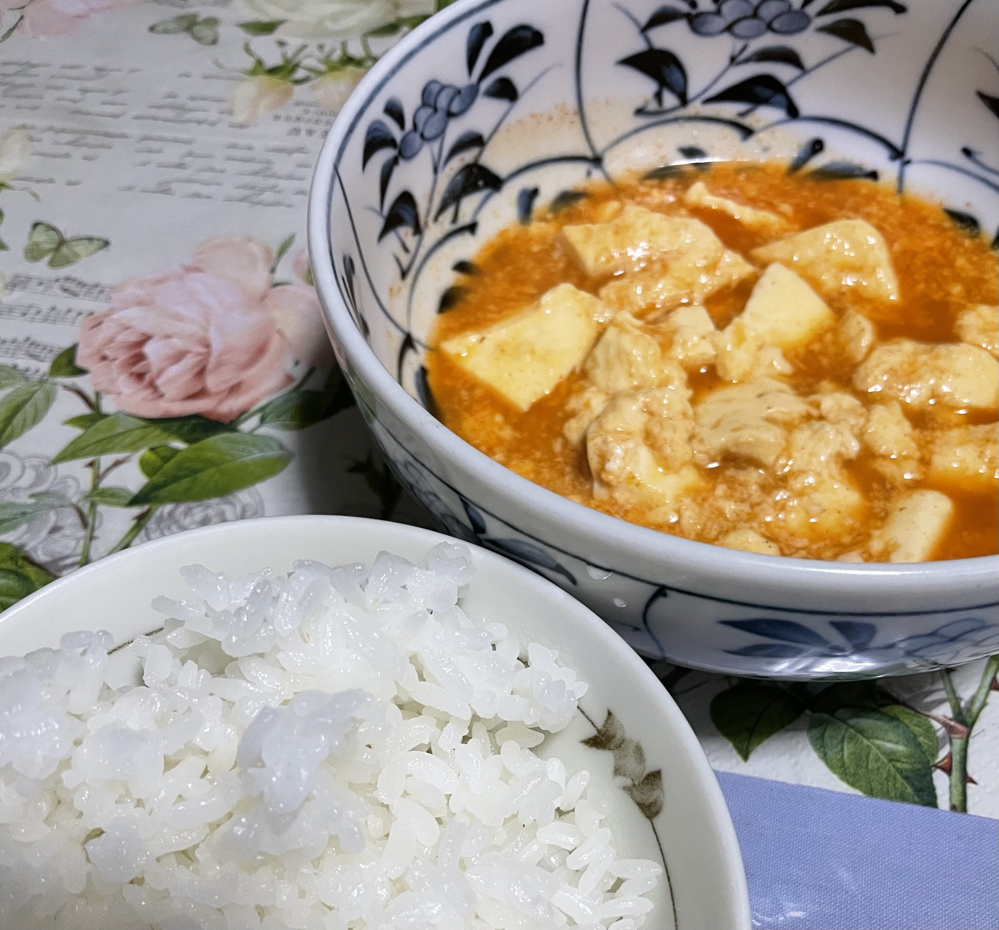
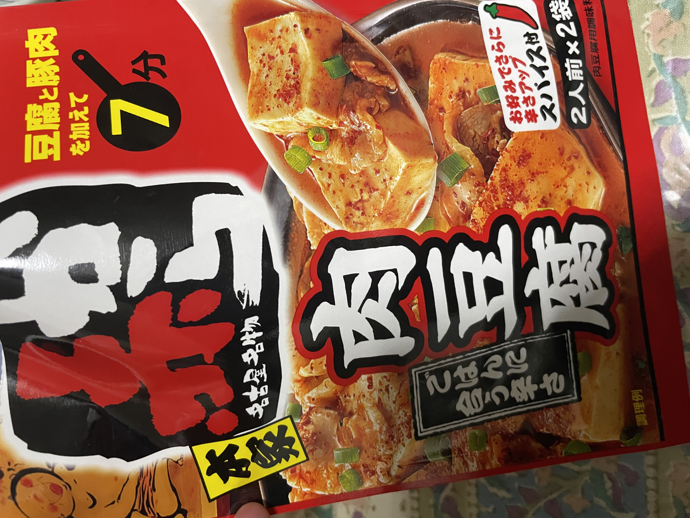

Good. You should definitely add the powder at the end. I’d eat this again.
■Akakara Tofu × Rice
■Ingredients: 1 block of tofu・Akakara Meat Tofu Sauce Mix (2 servings)
■Cooking method: Add 80ml of water and the sauce mix to a pot and bring to a boil. Cut the tofu with chopsticks (because using a knife and cutting board is a pain), put it into the pot, and cook for 5 minutes. Add the powder at the end.
⇒★★★★ 4.0
■Aoki Supermarket (Chiyogaoka Store)
■Nagoya City
■Akakara Meat Tofu Sauce Mix (Sugakiya Foods)
■About 240 yen
■Ate day：26/5/13


（Photos taken by myself）